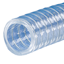
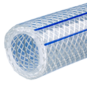
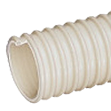
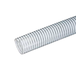
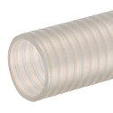
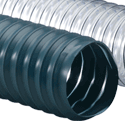

Hose
Harrington is dedicated to supplying high-quality hoses. Our wide inventory features numerous brands, styles, connection types, materials, and specifications. Hoses are essential in various applications, such as plumbing, irrigation, medical devices, suction, and protecting electrical cables. We offer materials such as PVC Corrugated, Polypropylene, EPDM Rubber, Polyurethane Alloy, and more. Choose your product to request a quote, find more information, and discover purchasing options.

Kuriyama K7160-04X100 0.46" OD x 0.25" ID Kuri Tec® K7160 Series Clear PVC Vacuum and Transfer Hose with Helically-Wound Spring Steel Wire Reinforcement, 100' Coilper FT · Sign in for price- Kuriyama K7160-06X100 0.6" OD x 0.38" ID Kuri Tec® K7160 Series Clear PVC Vacuum and Transfer Hose with Helically-Wound Spring Steel Wire Reinforcement, 100' Coilper FT · Sign in for price
- Kuriyama K7160-08X100 0.75" OD x 0.5" ID Kuri Tec® K7160 Series Clear PVC Vacuum and Transfer Hose with Helically-Wound Spring Steel Wire Reinforcement, 100' Coilper FT · Sign in for price
- Kuriyama K7160-10X100 0.89" OD x 0.63" ID Kuri Tec® K7160 Series Clear PVC Vacuum and Transfer Hose with Helically-Wound Spring Steel Wire Reinforcement, 100' Coilper FT · Sign in for price
- Kuriyama K7160-16X100 1.3" OD x 1" ID Kuri Tec® K7160 Series Clear PVC Vacuum and Transfer Hose with Helically-Wound Spring Steel Wire Reinforcement, 100' Coilper FT · Sign in for price
- Kuriyama K7160-16X50 1.3" OD x 1" ID Kuri Tec® K7160 Series Clear PVC Vacuum and Transfer Hose with Helically-Wound Spring Steel Wire Reinforcement, 50' Coilper FT · Sign in for price
- Kuriyama K7160-20X50 1.61" OD x 1.25" ID Kuri Tec® K7160 Series Clear PVC Vacuum and Transfer Hose with Helically-Wound Spring Steel Wire Reinforcement, 50' Coilper FT · Sign in for price
- Kuriyama K7160-24X50 1.86" OD x 1.5" ID Kuri Tec® K7160 Series Clear PVC Vacuum and Transfer Hose with Helically-Wound Spring Steel Wire Reinforcement, 50' Coilper FT · Sign in for price
- Kuriyama K7160-32X50 2.39" OD x 2" ID Kuri Tec® K7160 Series Clear PVC Vacuum and Transfer Hose with Helically-Wound Spring Steel Wire Reinforcement, 50' Coilper FT · Sign in for price
- Kuriyama K7160-36X50 2.75" OD x 2.25" ID Kuri Tec® K7160 Series Clear PVC Vacuum and Transfer Hose with Helically-Wound Spring Steel Wire Reinforcement, 50' Coilper FT · Sign in for price
- Kuriyama K7160-40X50 3" OD x 2.5" ID Kuri Tec® K7160 Series Clear PVC Vacuum and Transfer Hose with Helically-Wound Spring Steel Wire Reinforcement, 50' Coilper FT · Sign in for price
- Kuriyama K7160-48X50 3.5" OD x 3" ID Kuri Tec® K7160 Series Clear PVC Vacuum and Transfer Hose with Helically-Wound Spring Steel Wire Reinforcement, 50' Coilper FT · Sign in for price

Kuriyama K7300-12X100 1.2" OD x 0.75" ID Kuri Tec® K7300 Series Clear PVC Vacuum Pressure Hose with Helically-Wound Spring Steel Wire Reinforcement and Blue Tracer Yarns, 100' Coilper FT · Sign in for price- Kuriyama K7300-12X25 1.2" OD x 0.75" ID Kuri Tec® K7300 Series Clear PVC Vacuum Pressure Hose with Helically-Wound Spring Steel Wire Reinforcement and Blue Tracer Yarns, 25' Coilper FT · Sign in for price
- Kuriyama K7300-12X50 1.2" OD x 0.75" ID Kuri Tec® K7300 Series Clear PVC Vacuum Pressure Hose with Helically-Wound Spring Steel Wire Reinforcement and Blue Tracer Yarns, 50' Coilper FT · Sign in for price
- Kuriyama K7300-16X25 1.46" OD x 1" ID Kuri Tec® K7300 Series Clear PVC Vacuum Pressure Hose with Helically-Wound Spring Steel Wire Reinforcement and Blue Tracer Yarns, 25' Coilper FT · Sign in for price
- Kuriyama K7300-16X50 1.46" OD x 1" ID Kuri Tec® K7300 Series Clear PVC Vacuum Pressure Hose with Helically-Wound Spring Steel Wire Reinforcement and Blue Tracer Yarns, 50' Coilper FT · Sign in for price
- Kuriyama K7300-20X50 1.78" OD x 1.25" ID Kuri Tec® K7300 Series Clear PVC Vacuum Pressure Hose with Helically-Wound Spring Steel Wire Reinforcement and Blue Tracer Yarns, 50' Coilper FT · Sign in for price
- Kuriyama K7300-24X100 2.03" OD x 1.5" ID Kuri Tec® K7300 Series Clear PVC Vacuum Pressure Hose with Helically-Wound Spring Steel Wire Reinforcement and Blue Tracer Yarns, 100' Coilper FT · Sign in for price
- Kuriyama K7300-24X25 2.03" OD x 1.5" ID Kuri Tec® K7300 Series Clear PVC Vacuum Pressure Hose with Helically-Wound Spring Steel Wire Reinforcement and Blue Tracer Yarns, 25' Coilper FT · Sign in for price
- Kuriyama K7300-32X50 2.6" OD x 2" ID Kuri Tec® K7300 Series Clear PVC Vacuum Pressure Hose with Helically-Wound Spring Steel Wire Reinforcement and Blue Tracer Yarns, 50' Coilper FT · Sign in for price

Kuriyama MH125X100 1.49" OD x 1.25" ID Tigerflex® MH™ Series Natural PVC with Rigid PVC Helix Marine Suction Hose, Odor Resistant, 100' Lengthper FT · Sign in for price
Kuriyama MILK150X100 1.79" OD x 1.5" ID Tigerflex® MILK™ Series Clear PVC with White Rigid PVC Helix Food Grade Suction Hose, 100' Lengthper FT · Sign in for price- Kuriyama MILK200X100 2.33" OD x 2" ID Tigerflex® MILK™ Series Clear PVC with White Rigid PVC Helix Food Grade Suction Hose, 100' Lengthper FT · Sign in for price

Kuriyama OV150X100 1.76" OD x 1.5" ID Tigerflex® OV™ Series Clear Polyurethane Heavy Duty Suction Hose, Oil Resistant, 100' Lengthper FT · Sign in for price 4" EXHAUST HOSE BLU FR PVC R-2 FLEXADUX 25' LGTHper FT · Sign in for price
4" EXHAUST HOSE BLU FR PVC R-2 FLEXADUX 25' LGTHper FT · Sign in for price- 6" HOSE EXHAUST R-2 BLU FR PVC FLEXADUX 25' COILper FT · Sign in for price

Flexaust R2PV-015 1-1/2" Flexadux® PV R-2 Series Blue PVC Suction Hose, 25' Lengthper FT · Sign in for price- Flexaust R2PV-020 2" Flexadux® PV R-2 Series Blue PVC Suction Hose, 25' Lengthper FT · Sign in for price
- Flexaust R2PV-025 2-1/2" Flexadux® PV R-2 Series Blue PVC Suction Hose, 25' Lengthper FT · Sign in for price
- Flexaust R2PV-030 3" Flexadux® PV R-2 Series Blue PVC Suction Hose, 25' Lengthper FT · Sign in for price
- Flexaust R2PV-040 4" Flexadux® PV R-2 Series Blue PVC Suction Hose, 25' Lengthper FT · Sign in for price
- Flexaust R2PV-050 5" Flexadux® PV R-2 Series Blue PVC Suction Hose, 25' Lengthper FT · Sign in for price
- Flexaust R2PV-060 6" Flexadux® PV R-2 Series Blue PVC Suction Hose, 25' Lengthper FT · Sign in for price
- Flexaust R2PV-070 7" Flexadux® PV R-2 Series Blue PVC Suction Hose, 25' LengthCall for availabilityAsk a branch
- Flexaust R2PV-080 8" Flexadux® PV R-2 Series Blue PVC Suction Hose, 25' Lengthper FT · Sign in for price
- Flexaust R2PV-100 10" Flexadux® PV R-2 Series Blue PVC Suction Hose, 25' Lengthper FT · Sign in for price
- Flexaust R2PV-120 12" Flexadux® PV R-2 Series Blue PVC Suction Hose, 25' Lengthper FT · Sign in for price
- Flexaust R2PV-140 14" Flexadux® PV R-2 Series Blue PVC Suction Hose, 25' Lengthper FT · Sign in for price
- Flexaust R2PV-160 16" Flexadux® PV R-2 Series Blue PVC Suction Hose, 25' Lengthper FT · Sign in for price